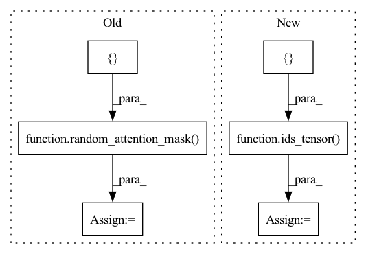

Pattern ID :15348

Before Change
input_mask = None
if self.config.use_input_mask:
input_mask = random_attention_mask([config.batch_size, config.seq_length])
token_type_ids = None
if self.config.use_token_type_ids:
token_type_ids = ids_tensor([config.batch_size, config.seq_length], config.type_vocab_size)
After Change
token_type_ids = None
if self.use_token_type_ids:
token_type_ids = ids_tensor([self.batch_size, self.seq_length], self.type_vocab_size)
sequence_labels = None
token_labels = None
choice_labels = None
In pattern: SUPERPATTERN
Frequency: 3
Non-data size: 6
Instances
Fragment ID: 52070682
Project Name: paddlepaddle/paddlenlp
Commit Name: 8d63af54fdac61a222f6738d2af3402328e76d96
Time: 2023-03-28
Author: 709153940@qq.com
File Name: tests/transformers/tinybert/test_modeling.py
M Class Name: TinyBertModelTester
N Class Name: TinyBertModelTester
M Method Name: prepare_config_and_inputs(1)
N Method Name: prepare_config_and_inputs(1)
M Parent Class:
N Parent Class:
M File Name: tests/transformers/tinybert/test_modeling.py
N File Name: tests/transformers/tinybert/test_modeling.py
M Start Line: 96
M End Line: 113
N Start Line: 193
N End Line: 208
'>
Before Change
attention_mask = None
if config.use_attention_mask:
attention_mask = random_attention_mask([config.batch_size, config.seq_length])
token_type_ids = None
if config.use_token_type_ids:
token_type_ids = paddle.zeros_like(input_ids)
After Change
if self.parent.use_labels:
sequence_labels = ids_tensor([self.batch_size], self.type_sequence_label_size)
token_labels = ids_tensor([self.batch_size, self.seq_length], self.num_labels)
choice_labels = ids_tensor([self.batch_size], self.num_choices)
return config, input_ids, token_type_ids, attention_mask, sequence_labels, token_labels, choice_labels
def prepare_config_and_inputs_for_common(self):
'>
Fragment ID: 52070678
Project Name: paddlepaddle/paddlenlp
Commit Name: 7ebda5ef75d1551bed0b302b4d2c2c7c78eb64cd
Time: 2023-03-17
Author: 63761690+lugimzzz@users.noreply.github.com
File Name: tests/transformers/ernie_gram/test_modeling.py
M Class Name: ErnieGramModelTester
N Class Name: ErnieGramModelTester
M Method Name: prepare_config_and_inputs(1)
N Method Name: prepare_config_and_inputs(1)
M Parent Class:
N Parent Class:
M File Name: tests/transformers/ernie_gram/test_modeling.py
N File Name: tests/transformers/ernie_gram/test_modeling.py
M Start Line: 90
M End Line: 110
N Start Line: 76
N End Line: 92
'>
Before Change
input_mask = None
if config.use_input_mask:
input_mask = random_attention_mask([config.batch_size, config.seq_length])
token_type_ids = None
if config.use_token_type_ids:
token_type_ids = ids_tensor([config.batch_size, config.seq_length], config.type_vocab_size)
After Change
token_type_ids = None
if self.use_token_type_ids:
token_type_ids = ids_tensor([self.batch_size, self.seq_length], self.type_vocab_size)
sequence_labels = None
token_labels = None
choice_labels = None
'>
Fragment ID: 52070679
Project Name: paddlepaddle/paddlenlp
Commit Name: 428c21a246f93dea64a181d3825db9be8fc512aa
Time: 2023-02-28
Author: 35913314+1649759610@users.noreply.github.com
File Name: tests/transformers/skep/test_modeling.py
M Class Name: SkepModelTester
N Class Name: SkepModelTester
M Method Name: prepare_config_and_inputs(1)
N Method Name: prepare_config_and_inputs(1)
M Parent Class:
N Parent Class:
M File Name: tests/transformers/skep/test_modeling.py
N File Name: tests/transformers/skep/test_modeling.py
M Start Line: 91
M End Line: 102
N Start Line: 90
N End Line: 100